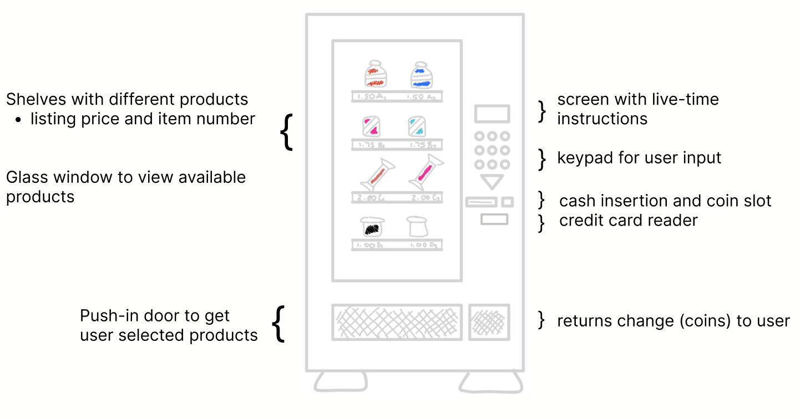

Person, Place, and Thing
To create an effective product, a designer must identify target users and address their needs instead of their own. In my storyboarding, I utilized observations, interviews, and personas to visualize primary users and their interactions with a product.
THE MACHINE
Products are created to solve a problem. In this case, vending machines are intended to be easy and intuitive, providing affordable and quick food or beverages. They exist all over public spaces but are largely used on college campuses to provide a time-efficient solution to grabbing a bite to eat.

CONTEXT
While vending machines are widely used, insinuating intuitive use among many individuals, I observed this common technical product to understand users' needs. I conducted user interviews to locate target users and gather empirical observations about the product's usability. I applied these observations to create personas that would use the product, ultimately leading to a storyboard to visualize a user's process.

UNDERSTANDING THE PRODUCT
To better understand the product’s features, I sketched the design, including all integral components and pieces of machinery. I labeled and described each element to understand the importance and relationship of different pieces.
OBSERVATIONS AND RESEARCH
I observed students using a snack vending machine at a Brown University library to gather ideas about the target user and their experience. I silently watched their purchasing process and followed up with unbiased questions about their experience.
Their ordering process had little variance with a linear timeline:
These users lacked particularly positive or negative emotions besides occasional confusion and frustration.
FINDINGS
The three students I interviewed said they used the machine to grab a quick snack before diving into their studies. They mentioned the closeness of the food and the convenience of not having to leave the building to go to a dining hall to get something to eat. They also discussed the affordability and advantages of cheap products.


The main recurring ideas were comments on the unappealing aesthetic of the machinery or the need for instructions or diagrams. The users mentioned the design was clean but unexciting and ugly. They were not particularly drawn to the product due to its style and layout; they were more interacting with the machine for the end result and the lack of a similar, better-designed product.
These users had succumbed to the boring, if not unattractive, design by lacking improvements or revisions for the product. However, a user was practically scarred from her first experience with the equipment: she was unsure of the order of steps to purchase a product. She was pretty confused with how the buttons and different components worked together. She said she spent what felt like “15 hours” trying to figure out the instructions and get her vending machine item. Her lack of familiarity with the UI impeded her usage and made her more hesitant to recommend or use the product again.

PERSONAS
To view vending machine target users simply, I created two personas: one focusing on an exhausted college student looking for a late-night snack and the other on a confused child using the machine on their own for the first time.
Both of these individuals start the process confused or forgetful about how to begin. These potential users are both stressed by other users waiting their turn. However, one user has more experience using the product and lets his mental capacity wander from the purchasing process.
THE STORY
Building off these fictitious potential users, I designed a storyboard to describe the usage process and how to navigate the product.
TAKEAWAYS
By observing, interviewing, creating personas, and designing storyboards, I gained insight into identifying pain points and conducting user interviews, deepening my understanding of how these issues affect users. I used my findings to shape how I think about target users and how to work with a product.
https://www.selectivend.com/vending-machines/snack-vending-machines/32-selection-snack-vending-machine/
https://www.istockphoto.com/vector/price-cut-in-neon-style-on-black-background-vector-illustration-cartoon-character-gm1366816685-437243164
https://www.shutterstock.com/image-vector/machine-fictional-cartoon-copy-space-isolated-365192555
https://stock.adobe.com/images/stressed-angry-confused-woman-line-icon-female-face-with-question-mark-thunder-bolt-exclamation-sign-negative-thinking-anxiety-depression-and-anger-concept-vector-illustration-flat-clip-art/439547884